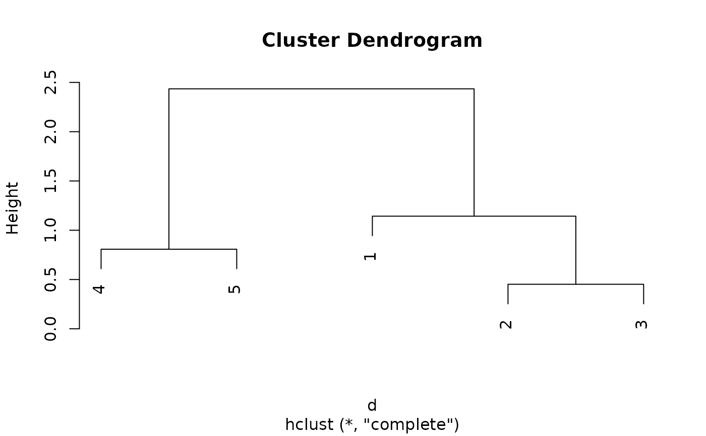
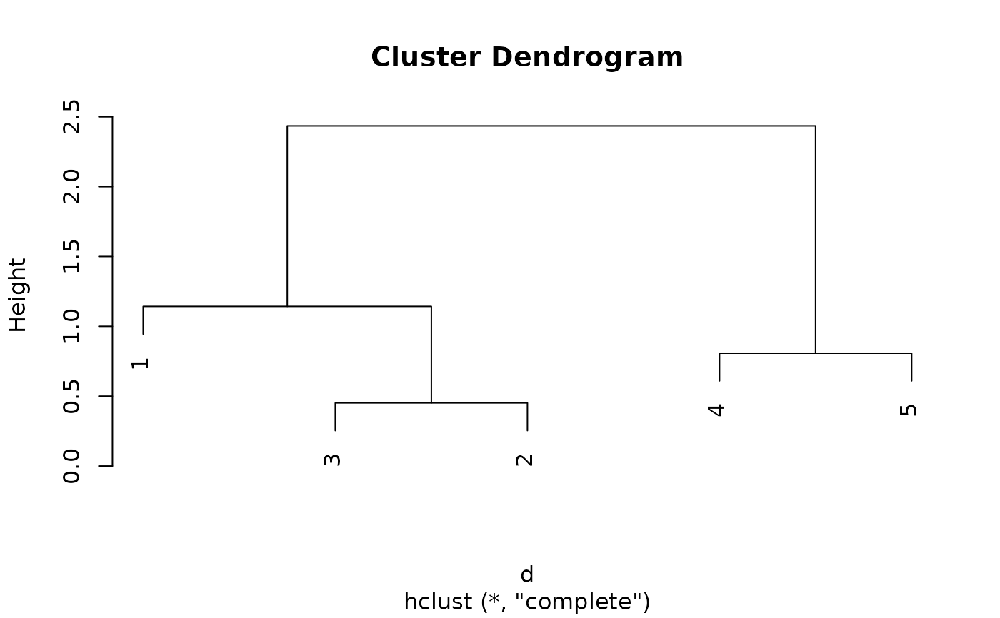
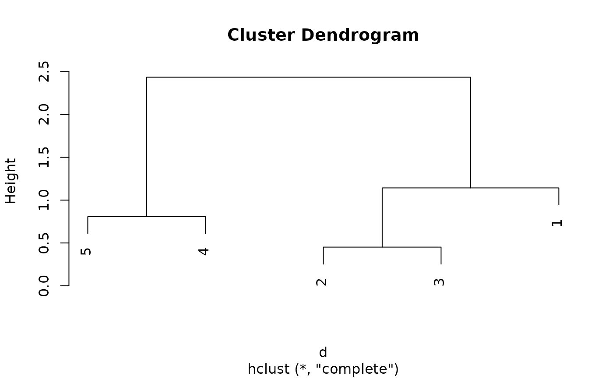

Provides the generic function and methods for permuting the order of various
objects including vectors, lists, dendrograms (also hclust objects),
the order of observations in a dist object, the rows and columns of a
matrix or data.frame, and all dimensions of an array given a suitable
ser_permutation object.
Usage
permute(x, order, ...)
# S3 method for class 'array'
permute(x, order, margin = NULL, ...)
# S3 method for class 'matrix'
permute(x, order, margin = NULL, ...)
# S3 method for class 'data.frame'
permute(x, order, margin = NULL, ...)
# S3 method for class 'table'
permute(x, order, margin = NULL, ...)
# S3 method for class 'numeric'
permute(x, order, ...)
# S3 method for class 'character'
permute(x, order, ...)
# S3 method for class 'list'
permute(x, order, ...)
# S3 method for class 'dist'
permute(x, order, ...)
# S3 method for class 'dendrogram'
permute(x, order, dist = NULL, ...)
# S3 method for class 'hclust'
permute(x, order, dist = NULL, ...)Arguments
- x
an object (a list, a vector, a
distobject, a matrix, an array or any other object which providesdimand standard subsetting with"[").- order
an object of class ser_permutation which contains suitable permutation vectors for
x. Alternatively, a character string with the name of a seriation method appropriate forxcan be specified (seeseriate()). This will perform seriation and permutex. The valueTRUEwill permute using the default seriation method.- ...
if
orderis the name of a seriation method, then additional arguments are passed on toseriate().- margin
specifies the dimensions to be permuted as a vector with dimension indices. If
NULL,orderneeds to contain a permutation for all dimensions. If a single margin is specified, thenordercan also contain a single permutation vector.marginare ignored.- dist
the distance matrix used to create the dendrogram. Only needed if order is the name of a seriation method.
Details
The permutation vectors in ser_permutation are suitable if the number
of permutation vectors matches the number of dimensions of x and if
the length of each permutation vector has the same length as the
corresponding dimension of x.
For 1-dimensional/1-mode data (list, vector, dist), order can
also be a single permutation vector of class ser_permutation_vector
or data which can be automatically coerced to this class (e.g. a numeric
vector).
For dendrogram and hclust, subtrees are rotated to represent
the order best possible. If the order is not achieved perfectly then the
user is warned. See also reorder.hclust() for
reordering hclust objects.
See also
Other permutation:
get_order(),
permutation_vector2matrix(),
reorder.hclust(),
ser_dist(),
ser_permutation(),
ser_permutation_vector()
Examples
# List data types for permute
methods("permute")
#> [1] permute.array* permute.character* permute.data.frame*
#> [4] permute.default* permute.dendrogram* permute.dist*
#> [7] permute.hclust* permute.list* permute.matrix*
#> [10] permute.numeric* permute.table*
#> see '?methods' for accessing help and source code
# Permute matrix
m <- matrix(rnorm(10), 5, 2, dimnames = list(1:5, LETTERS[1:2]))
m
#> A B
#> 1 1.3610897 -0.9521032
#> 2 0.5343317 -0.1632301
#> 3 0.9191527 -0.3999724
#> 4 -0.3251505 0.1920118
#> 5 -0.9796127 -0.2811513
# Permute rows and columns
o <- ser_permutation(5:1, 2:1)
o
#> object of class ‘ser_permutation’, ‘list’
#> contains permutation vectors for 2-mode data
#>
#> vector length seriation method
#> 1 5 unknown
#> 2 2 unknown
permute(m, o)
#> B A
#> 5 -0.2811513 -0.9796127
#> 4 0.1920118 -0.3251505
#> 3 -0.3999724 0.9191527
#> 2 -0.1632301 0.5343317
#> 1 -0.9521032 1.3610897
## permute only columns
permute(m, o, margin = 2)
#> B A
#> 1 -0.9521032 1.3610897
#> 2 -0.1632301 0.5343317
#> 3 -0.3999724 0.9191527
#> 4 0.1920118 -0.3251505
#> 5 -0.2811513 -0.9796127
## permute using PCA seriation
permute(m, "PCA")
#> A B
#> 1 1.3610897 -0.9521032
#> 3 0.9191527 -0.3999724
#> 2 0.5343317 -0.1632301
#> 4 -0.3251505 0.1920118
#> 5 -0.9796127 -0.2811513
## permute only rows using PCA
permute(m, "PCA", margin = 1)
#> A B
#> 1 1.3610897 -0.9521032
#> 3 0.9191527 -0.3999724
#> 2 0.5343317 -0.1632301
#> 4 -0.3251505 0.1920118
#> 5 -0.9796127 -0.2811513
# Permute data.frames using heatmap seriation (= hierarchical
# clustering + optimal leaf ordering)
df <- as.data.frame(m)
permute(df, "Heatmap")
#> A B
#> 5 -0.9796127 -0.2811513
#> 4 -0.3251505 0.1920118
#> 2 0.5343317 -0.1632301
#> 3 0.9191527 -0.3999724
#> 1 1.3610897 -0.9521032
# Permute objects in a dist object
d <- dist(m)
d
#> 1 2 3 4
#> 2 1.1427378
#> 3 0.7072176 0.4518121
#> 4 2.0377451 0.9300034 1.3779462
#> 5 2.4349669 1.5185299 1.9024796 0.8075916
permute(d, c(3, 2, 1, 4, 5))
#> 3 2 1 4
#> 2 0.4518121
#> 1 0.7072176 1.1427378
#> 4 1.3779462 0.9300034 2.0377451
#> 5 1.9024796 1.5185299 2.4349669 0.8075916
permute(d, "Spectral")
#> 1 3 2 4
#> 3 0.7072176
#> 2 1.1427378 0.4518121
#> 4 2.0377451 1.3779462 0.9300034
#> 5 2.4349669 1.9024796 1.5185299 0.8075916
# Permute a list
l <- list(a = 1:5, b = letters[1:3], c = 0)
l
#> $a
#> [1] 1 2 3 4 5
#>
#> $b
#> [1] "a" "b" "c"
#>
#> $c
#> [1] 0
#>
permute(l, c(2, 3, 1))
#> $c
#> [1] 0
#>
#> $a
#> [1] 1 2 3 4 5
#>
#> $b
#> [1] "a" "b" "c"
#>
# Permute to reorder dendrogram (see also reorder.hclust)
hc <- hclust(d)
plot(hc)

plot(permute(hc, 5:1))
plot(permute(hc, "OLO", dist = d))
plot(permute(hc, "GW", dist = d))
plot(permute(hc, "MDS", dist = d))

plot(permute(hc, "TSP", dist = d))
